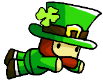
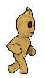
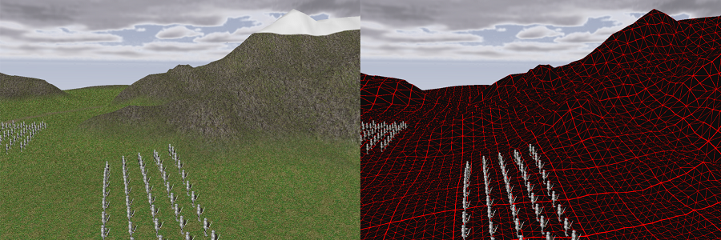
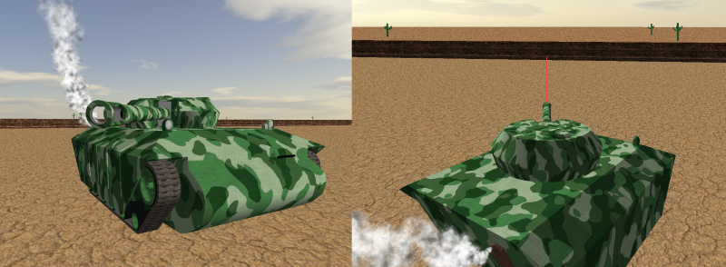

- Philip Price
Goal and Background
My dream is to be on a creative team that makes games that hundreds of thousands of people play. I have experience being a gameplay programmer, a graphics programmer, and a artificial intelligence programmer. I currently work at Serenity Forge.
Below you can see a collection of my game development and computer graphics related work.
Patrick

Patrick is a game on the app store that you can download now if you have iPhone in your hands. It is a free game with in-game ads that are displayed during breaks in the gameplay. Patrick is based off an incredibly simple yet hugely popular game you probably recognize. The whole purpose of Patrick was to gain experience making a game suitable for the app store. The game was released just a month before Luna's Wandering Stars and as such was Serenity Forge's first release of a game that wasn't an artistic visual novel. Patrick was a quick project that I programmed 100% of that taught us all a lot about mobile games.
Beyond Regret

I helped get Beyond Regret to get it into a state to be ready to be shown in a game trailer at Denver Comic Con. I implemented core game features such as allowing the player to latch onto ledges and creating dynamic objects in the game such as bouncy couches and chandeliers that the player can swing on.
Tessellated World
Advanced Computer Graphics final project. Some strategy games these days involve tessellating the environment as it gets closer to the camera. The basic idea is to reduce the polycount of objects the further away an object is from the camera for performance reasons. In this OpenGL program written in c, I created a mountainous environment that is tessellated all using my own shaders. This also includes an army of knights being made into sprites once far away enough from the camera. This program takes pictures of the knight models at all viewable angles to make these sprites possible.

Tank Simulator
Computer Graphics final project. Using c, OpenGL, SDL, and 3D models I made in Blender, the player drives around a tank in a simple desert gully. It features gas particles coming out of the tank's exhaust, a fully rotational turret, moving wheels and tank treads, the ability to shoot the tank's cannon, and the tank shells colliding with the environment which creates an explosion.

TNT Gold Rush
TNT Gold Rush is a game I made in Game Maker senior year of high school, available for download. I created for a Technology Student Association video game design competition. The game features over 100 hours of gameplay if you play all 21 levels. The game is all about manipulating the location of timed TNT bombs which are dropped randomly from a mining cart rolling above the player. Use the TNT to create holes in the ground in order to extract precious gold nuggets, without being blown up in the process! The player can speed up the mining process using explosive goo and super ability granting orbs that are extracted from the ground on the way down to the gold.
Grasshopper
Animation final project. This project used numerous objects I created in Blender and rendered with Maya. Check it out below:
My tank models from the tank simulator were used as toys. If that doesn't seem to load, try this alternative link. Also, here is a bonus stop-animation video I made for a similar class (music and everything done by me).
Miscellaneous
The first video game I ever made was all the way back in second grade, when I made an untitled game using an early version of Game Maker where you play as a small blue dinosaur trying to get through a maze without colliding into any baddies.
Other games I have worked on worth mentioning include "No Longer Human" and "House Hopper". "No Longer Human" is a first person free-to-play fps based on elemental powers that interact with the environment. It is being created in the Unreal Developer's Kit. I implemented a few of these elemental powers into the game. "House Hopper" was a game where you play as a grasshopper inside a three dimension house. The objective is to leave the house in a limited number of jumps without touching the floor, for otherwise you will be stepped on! "House Hopper" was created in the Unity engine, and a lot of the assets you see in the Grasshopper animation video above were intended to be used in the game. "House Hopper" was left unfinished because I found them to be too ambitious for such a small and limited team.